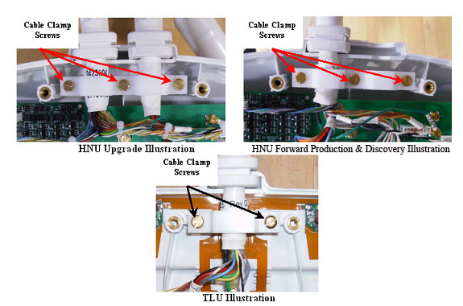

NOTE:
When re-installing components, tighten all screws snugly, but do not over-tighten. The recommended torque is 10 in-lbs for M4 screws and 15 in-lbs for M5 screws.
Illustration 11:
Removing the Cable Clamp
